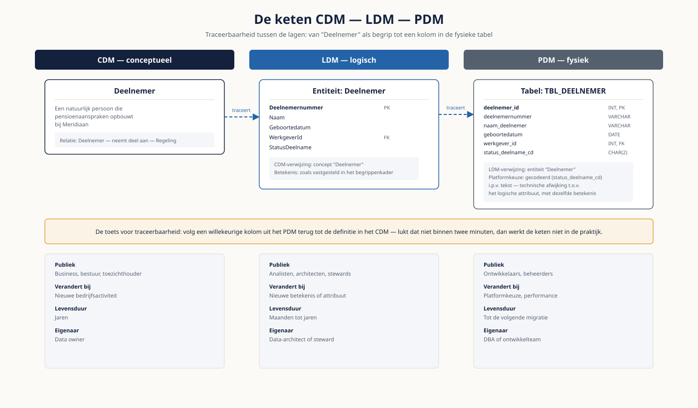

Deel 12 — Conceptueel, logisch en fysiek modelleren
Niveau 2 — Praktijk · Reader
Voorbereiding, geen vervanging
Deze cursusmap is onafhankelijk ontwikkeld door Ductus B.V. Ductus is niet gelieerd aan, geaccrediteerd door of goedgekeurd door DAMA International, IIBA, IAPP, de EDM Association of Microsoft.
Dit materiaal bereidt voor op de genoemde examens en vervangt het officiële examenmateriaal niet. Bodies of knowledge, handboeken en examenblueprints worden hier niet gereproduceerd; deelnemers schaffen die bronnen zelf aan.
Alle genoemde merken zijn eigendom van hun respectieve houders. Examengegevens gecontroleerd in augustus 2026 — verifieer vóór inschrijving bij de bron.
1. Waar dit deel over gaat
In deel 2 leerde je modellen lezen. Hier bouw je ze — en je bouwt er drie soorten, want de vraag "hoe modelleer je dit" heeft verschillende antwoorden afhankelijk van waarvoor het model dient. Een genormaliseerd model voor de administratie, een dimensioneel model voor de rapportage en een Data Vault voor de historische opslag kunnen naast elkaar bestaan zonder dat een van de drie fout is.
Het lastigste onderdeel van dit deel is niet de notatie maar de tijd. Een pensioenuitvoerder moet kunnen reconstrueren wat er gold, wat er is geregistreerd, en wanneer men dat wist. Die drie vallen niet samen, en modellen die daar geen rekening mee houden, breken op het moment dat een toezichthouder een reconstructie vraagt.
Leerdoelen
- Je bouwt een samenhangende keten CDM, LDM en PDM met traceerbaarheid tussen de niveaus.
- Je kiest een notatievorm en verantwoordt die keuze tegenover het publiek.
- Je ontwerpt een dimensioneel model met een expliciete granulariteitskeuze.
- Je kiest per attribuut een slowly changing dimension-type en onderbouwt de keuze.
- Je schetst een Data Vault-model en benoemt wanneer die aanpak wel en niet loont.
- Je onderscheidt geldigheidstijd van registratietijd en modelleert bitemporeel.
- Je voert een modelreview als gesprek dat de ontwerper verder helpt.
2. De keten in samenhang
CDM, LDM en PDM zijn geen drie versies van hetzelfde document maar drie lagen met eigen publiek en eigen levensduur. Het conceptuele model verandert zelden, het logische bij elke betekenisverandering, het fysieke bij elke technische keuze.
| CDM | LDM | PDM | |
|---|---|---|---|
| Publiek | Business, bestuur, toezichthouder | Analisten, architecten, stewards | Ontwikkelaars, beheerders |
| Verandert bij | Nieuwe bedrijfsactiviteit | Nieuwe betekenis of attribuut | Platformkeuze, performance |
| Levensduur | Jaren | Maanden tot jaren | Tot de volgende migratie |
| Eigenaar | Data owner | Data-architect of steward | DBA of ontwikkelteam |
Traceerbaarheid
Wat de keten waardevol maakt is niet dat de drie modellen bestaan maar dat ze aan elkaar hangen. Bij elke entiteit in het LDM hoort een verwijzing naar de conceptuele entiteit; bij elke tabel in het PDM een verwijzing naar de logische entiteit. Zonder die verwijzingen kun je bij een wijziging niet bepalen wat er stroomafwaarts breekt — en dat is precies de impactanalyse die het begripswijzigingsproces uit deel 16 nodig heeft.
De toets voor traceerbaarheid
Neem een willekeurige kolom uit het fysieke model en volg hem terug tot de definitie in het conceptuele model. Lukt dat niet binnen twee minuten, dan is de keten in de praktijk niet bruikbaar — hoe netjes de losse modellen er ook uitzien.

3. Notatievormen
| Notatie | Sterk in | Zwak in | Publiek |
|---|---|---|---|
| ERD, kraaienpoot | Snel te lezen, breed bekend, compact | Beperkte expressie van regels en constraints | Vrijwel iedereen |
| ERD, Barker | Expliciete optionaliteit, leesbare zinnen | Minder bekend, vraagt uitleg | Business en analisten |
| UML-klassendiagram | Rijk in relaties, sluit aan op softwareontwerp | Wordt door business als technisch ervaren | Ontwikkelteams |
| FCO-IM en ORM | Feitgebaseerd; dwingt tot expliciete verwoording van elke regel | Modellen worden groot en vragen gewenning | Analisten en modelleurs |
De feitgebaseerde aanpak verdient een aparte opmerking. Doordat je elke relatie als zin verwoordt — "een Deelnemer neemt deel aan een Regeling met ingang van een Datum" — komt betekenis boven water die in een kraaienpootdiagram onzichtbaar blijft. De prijs is omvang: modellen worden groter en vragen gewenning bij de lezer. Voor een validatiesessie met de business is dat vaak de investering waard; voor een overzichtsplaat zelden.
De keuze is dus geen smaakkwestie maar een publiekskwestie. Kies de notatie waarin de mensen die het model moeten goedkeuren kunnen lezen wat er staat, en zet er altijd een legenda bij.
4. Dimensioneel modelleren
Een dimensioneel model is geoptimaliseerd voor lezen en voor begrijpelijkheid, niet voor consistentie bij wijzigen. Dat is de reden dat het naast het genormaliseerde model bestaat en het niet vervangt.
Ster en sneeuwvlok
- Ster: één feitentabel met daaromheen gedenormaliseerde dimensietabellen. Eenvoudig te bevragen en te begrijpen; de standaardkeuze.
- Sneeuwvlok: dimensies zijn genormaliseerd in meerdere tabellen. Bespaart opslag en kost leesbaarheid. Kies dit alleen bij een aanwijsbare reden.
Granulariteit
De belangrijkste beslissing in een dimensioneel model is het grein: wat stelt één rij in de feitentabel voor? Eén premiebetaling, of het maandtotaal per deelnemer, of per werkgever? Dat bepaalt wat je kunt analyseren en wat voorgoed onbereikbaar is.
De vuistregel: kies het fijnste grein dat je kunt dragen. Aggregeren kan altijd nog; uitsplitsen wat je nooit hebt vastgelegd niet. Wie het maandtotaal opslaat, kan nooit meer beantwoorden of er binnen een maand meerdere deelbetalingen waren.
Drie soorten feiten
| Type | Wat het vastlegt | Voorbeeld bij Meridiaan |
|---|---|---|
| Transactiefeit | Eén gebeurtenis op één moment | Eén premiebetaling |
| Periodieke snapshot | De stand aan het eind van een vaste periode | Opgebouwde aanspraak per deelnemer per maandeinde |
| Accumulating snapshot | Een proces met vaste mijlpalen, bijgewerkt tijdens de loop | Een waardeoverdracht: aangevraagd, beoordeeld, uitgevoerd, afgerond |
De accumulating snapshot wordt het minst gebruikt en is bij een pensioenuitvoerder juist waardevol: doorlooptijden van waardeoverdrachten zijn er direct uit af te leiden, zonder dat je gebeurtenissen achteraf aan elkaar moet knopen.
5. Slowly changing dimensions
Een deelnemer verhuist. Wat gebeurt er met de rapportages over vorig jaar? Het antwoord daarop is een ontwerpkeuze, en die maak je per attribuut — niet per dimensie.
| Type | Wat er gebeurt | Gebruik bij | Prijs |
|---|---|---|---|
| Type 0 | De waarde wordt nooit gewijzigd | Geboortedatum, oorspronkelijke ingangsdatum | Geen historie nodig |
| Type 1 | Overschrijven; de oude waarde verdwijnt | Correcties van invoerfouten | Historie is weg, ook voor eerdere rapportages |
| Type 2 | Nieuwe rij met geldigheidsperiode | Adres, werkgever, deelnemerstatus | De dimensie groeit; bevragen wordt complexer |
| Type 3 | Extra kolom met de vorige waarde | Eenmalige herindelingen, zoals een nieuwe sectorindeling | Slechts één stap terug |
De vraag die de keuze bepaalt
Moet een rapportage over vorig jaar de situatie van toen tonen, of de situatie van nu? Bij een correctie van een invoerfout wil je type 1: de fout hoort nooit gegolden te hebben. Bij een verhuizing wil je type 2: de deelnemer wóónde toen daar. Wie dat onderscheid niet maakt, corrigeert historie weg of bevriest fouten.
6. Data Vault 2.0
Data Vault splitst gegevens in drie soorten tabellen en is ontworpen voor een landschap waarin bronnen komen en gaan en waarin alles auditeerbaar moet zijn.
| Onderdeel | Bevat | Bij Meridiaan |
|---|---|---|
| Hub | De bedrijfssleutel van een kernobject, meer niet | Hub Deelnemer met het deelnemernummer |
| Link | De relatie tussen hubs | Link tussen Deelnemer, Regeling en Werkgever |
| Satellite | De beschrijvende attributen met geldigheidsperiode en bron | Satellite met adresgegevens uit de polisadministratie |

Wanneer het loont
- Veel bronsystemen die op verschillende momenten wijzigen, zoals tijdens een migratie waarin twee landschappen naast elkaar draaien.
- Een harde eis om per gegeven te kunnen aantonen uit welke bron het kwam en wanneer het is geladen.
- Een verwachting dat het bronlandschap de komende jaren blijft veranderen.
Wanneer niet
- Eén stabiel bronsysteem en een beperkt aantal afnemers. De extra complexiteit levert dan niets op.
- Een team dat de aanpak niet beheerst. Een half toegepaste Data Vault is slechter dan een goed genormaliseerd model.
- Als de werkelijke behoefte rapportage is. Data Vault is een opslagpatroon, geen presentatielaag — daar komt alsnog een dimensioneel model bovenop.
Voor Meridiaan is de afweging reëel: een vijfendertig jaar oude polisadministratie naast een nieuw platform, met een DNB-bevinding over aantoonbaarheid. Dat pleit voor Data Vault als tussenlaag. Daartegenover staat dat de organisatie op volwassenheidsniveau 1 tot 2 zit en de aanpak niet beheerst. Dat is precies het soort afweging dat je expliciet maakt in plaats van impliciet beslist.
7. Tijd: geldigheid en registratie
Twee tijdlijnen die zelden samenvallen en die je uit elkaar moet houden.
- Geldigheidstijd: vanaf wanneer gold dit in de werkelijkheid? De deelnemer verhuisde op 1 maart.
- Registratietijd: vanaf wanneer wisten wij dit? De verhuizing werd op 18 april doorgegeven.
Tussen 1 maart en 18 april dacht de organisatie dat het oude adres gold. Een rapportage van 1 april toonde dus het oude adres — en dat was op dat moment correct. Wie later reconstrueert wat er op 1 april is gerapporteerd, heeft beide tijdlijnen nodig.
| Vraag | Heb je nodig |
|---|---|
| Waar woonde de deelnemer op 1 april? | Geldigheidstijd |
| Wat stond er op 1 april in onze rapportage? | Registratietijd |
| Klopte onze rapportage van 1 april, gegeven wat we toen wisten? | Beide — dit is bitemporeel |
De derde vraag is de vraag van een toezichthouder. Een organisatie die alleen geldigheidstijd vastlegt, kan haar eigen historische rapportages niet reproduceren en lijkt daardoor fouten te hebben gemaakt die zij niet maakte. Dat is een van de duurdere modelleerfouten die er bestaan.
8. De modelreview als gesprek
Een review is geen keuring. De opbrengst is niet de foutenlijst maar het gesprek dat volgt, en dat gesprek gaat alleen goed als de ontwerper zich niet hoeft te verdedigen.
Zes criteria
- Correctheid: klopt het model met de werkelijkheid die het beschrijft?
- Volledigheid: ontbreekt er iets wat de gebruikers nodig hebben?
- Begrijpelijkheid: kan het beoogde publiek het lezen?
- Onderhoudbaarheid: wat gebeurt er bij de eerstvolgende voorspelbare verandering?
- Traceerbaarheid: hangt het aan de andere niveaus en aan het begrippenkader?
- Tijd: kan het model het verleden reconstrueren waar dat nodig is?
Gespreksvoering
- Begin bij wat werkt, en meen dat. Wie opent met een bevinding, krijgt de rest van het gesprek verdediging.
- Formuleer bevindingen als vraag: "wat gebeurt er in dit model als een werkgever fuseert?" verslaat "deze relatie klopt niet".
- Rangschik naar impact en bespreek er hooguit drie. Een lijst van vijftien wordt niet verwerkt.
- Leg vast wat er is besproken en wat de ontwerper ermee gaat doen — anders herhaalt dezelfde review zich over drie maanden.
9. Model, begrippenkader en proces
Een model hoort aan twee andere artefacten te hangen. Aan het begrippenkader, zodat elke entiteit en elk attribuut een vastgestelde definitie heeft — dat is deel 13. En aan de processen, zodat duidelijk is welk proces welke gegevens creëert en wijzigt.
Die tweede koppeling wordt structureel vergeten en is verrassend nuttig: door per entiteit te benoemen welk proces hem creëert, vind je de entiteiten die niemand aanmaakt — en dat zijn er altijd een paar. Ze komen uit een oud ontwerp of uit een systeem dat niet meer bestaat.
10. Vijf fouten op dit niveau
- Een dimensioneel model bouwen zonder expliciete granulariteitskeuze.
- Eén SCD-type kiezen voor een hele dimensie in plaats van per attribuut.
- Data Vault toepassen omdat het modern is, zonder dat het bronlandschap erom vraagt.
- Alleen geldigheidstijd vastleggen, waardoor historische rapportages niet te reproduceren zijn.
- Een review voeren als keuring, waarna de ontwerper de volgende keer niets meer laat zien.
11. Examenrelevantie
Dit deel is de kern van de voorbereiding op het CDMP-specialistexamen Data Modeling & Design. De terminologie volgt de DAMA-DMBOK2 Revised Edition en die is op het examen leidend, ook waar de Nederlandse praktijk andere woorden gebruikt.
Aandachtspunten
- De drie abstractieniveaus met publiek, levensduur en eigenaar.
- Normalisatie tot en met Boyce-Codd, en het probleem dat elke vorm oplost.
- Dimensioneel modelleren: ster versus sneeuwvlok, granulariteit, de drie feittypen.
- Slowly changing dimensions type 0 tot en met 3, met een scenario per type.
- Data Vault: hub, link en satellite, en wanneer de aanpak passend is.
- Engels: grain, conformed dimension, degenerate dimension, surrogate key, effective date, business key.
Studiemateriaal bij dit deel
Kernbron: het hoofdstuk over data modeling and design in de DAMA-DMBOK2 Revised Edition — tijdens het examen het enige toegestane hulpmiddel, in papier óf digitaal.
Verdieping: het standaardwerk van Ralph Kimball over dimensioneel modelleren, en de publicaties van Dan Linstedt over Data Vault 2.0.
Examenopzet en de actuele lijst met specialistexamens: cdmp.info/exams en dama.org/certification.
Dit materiaal reproduceert geen van deze bronnen en vervangt ze niet.